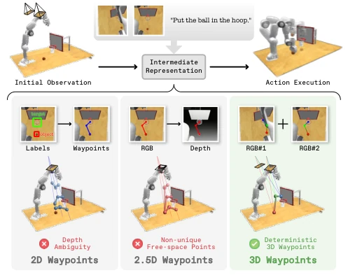
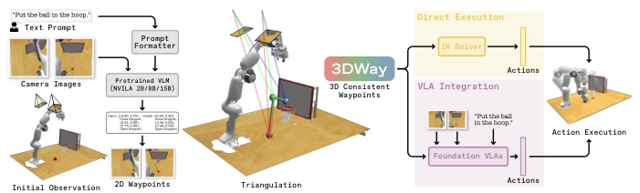
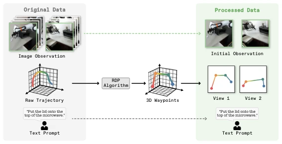
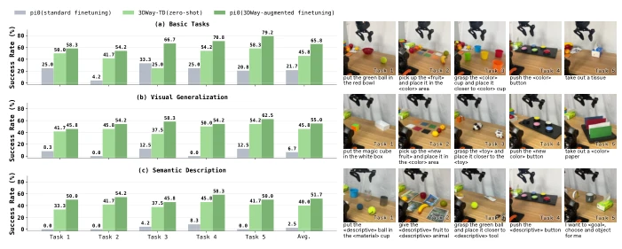

这篇论文试图用“曲线救国”的方式解决具身智能的 3D 落地难题。作者很聪明，不直接让 VLM 猜 3D 坐标，而是让它猜多视角一致的 2D 点，再三角化回 3D。这招确实避开了深度噪声和自由空间歧义，实验数据也漂亮，RLBench 上零样本表现碾压基线。但槽点也不少：只考虑了平移没考虑朝向（SE(3)），还得依赖标定好的双摄像头，真机部署时如果视角一变或者遮挡严重，这“一致性”还能不能扛得住？另外，把 3D 点转成文本格式训练 VLM，虽然保留了 VL 先验，但精度会不会被文本 token 的离散化限制？总的来说，是个不错的中间表示，但离通用灵巧操作还有距离，未来若不能解决旋转自由度，恐怕只能算半吊子。
This paper attempts to solve the 3D deployment challenges of embodied intelligence using an 'indirect approach'. The authors are clever, not directly asking the VLM to guess 3D coordinates, but to guess multi-view consistent 2D points, then triangulate back to 3D. This strategy indeed avoids depth noise and free space ambiguity, and experimental data is impressive, zero-shot performance on RLBench significantly outperforms baselines. But there are also many drawbacks: only considers translation without considering orientation (SE(3)), and still relies on calibrated stereo cameras. During real-world deployment, if the viewpoint changes or occlusion is severe, whether this 'consistency' can still withstand it? Additionally, converting 3D points to text format to train VLM, while preserving VL priors, will precision be limited by the discretization of text tokens? Overall, it is a decent intermediate representation, but still far from general dexterous manipulation. In the future, if rotation degrees of freedom cannot be solved, it can probably only be considered incomplete.
研究动机Motivation
现有 VLA 模型面临模态鸿沟：离散的 2D 视觉语言 vs 连续的 3D 动作。轨迹表示法中，2D 轨迹存在深度模糊（Fig 1），2.5D 轨迹（深度反投影）在自由空间点定义不明确且对深度噪声敏感 [38, 55, 58]。直接微调 VLM 容易遗忘 VL 先验 [5, 13, 68, 71]。需要一种能明确 3D 空间定位且兼容 VLM 的中间表示。现有方法如 [34] 依赖 2D 轨迹，缺乏 3D 物理空间引导；[38, 55] 虽引入深度但受限于自由空间歧义。
Existing VLA models face a modality gap: discrete 2D visual language vs continuous 3D actions. In trajectory representations, 2D trajectories have depth ambiguity (Fig 1), 2.5D trajectories (depth back-projection) have ill-defined free space points and are sensitive to depth noise [38, 55, 58]. Directly fine-tuning VLMs easily leads to forgetting VL priors [5, 13, 68, 71]. An intermediate representation that enables explicit 3D spatial localization and is compatible with VLMs is needed. Existing methods such as [34] rely on 2D trajectories, lacking 3D physical space guidance; [38, 55] although introducing depth, are limited by free space ambiguity.

Fig. 1: Comparison between our 3DWay representation and existing intermediate rep- resentations. While 2D waypoints suffer from depth ambiguity, 2.5D (obtained by depth back-projection of 2DWay) waypoints still lack uniqueness in free space, underscoring the superior spatial localization and actionability of our 3DWay representation.
The overall process is divided into data construction, model fine-tuning, and inference execution. First, use the RDP algorithm to simplify original TCP trajectories, combined with camera intrinsic and extrinsic parameter projection to generate multi-view consistent 2D supervised data. The model is based on the NVILA family VLM, using text format supervision for 2D coordinate prediction, avoiding complex regression head design, thereby preserving VL priors. During inference, the VLM outputs multi-view 2D points, which are triangulated back to 3D trajectories. Innovations lie in: 1) Geometric consistency constraint: not directly predicting 3D points, but implicitly constraining 3D structure through multi-view 2D consistency, resolving depth ambiguity; 2) Adaptation to VLM training paradigm: converting coordinates to text tokens, compatible with standard language modeling objectives; 3) Adaptive integration: using 3DWay as time-window state input to π0 [3], dynamically enhancing VLA spatial grounding, rather than simple concatenation. Additionally, supports both direct execution and VLA enhancement modes, with high flexibility.

Fig. 2: Overview of 3DWay. Given multi-view RGB inputs and a language instruc- tion, we first use our fine-tuned VLM to predict Multi-view Consistent 2D Waypoints (2D-MCW). The 2D-MCW are subsequently reconstructed into 3D waypoints via tri- angulation. The resulting 3DWay provides a versatile and generalizable representation, supporting both direct execution and VLA integration.

Fig. 3: Our training data processing pipeline. To ensure multi-view consistent supervision, we apply the RDP simplification algorithm [4,48] and perform perspective projection to obtain paired image-language data and 2D-MCW supervision.
Tested on RLBench, VLABench, and real world (AgileX PIPER). Baselines include OpenVLA-OFT, π0, π0.5. Metric is success rate. 3DWay-TD performs better than π0.5 on unseen tasks. 3DWay enhanced π0 shows significant improvement under few-shot (Sim: 17.6%->38.1%, Real: 21.7%->65.8%). Ablation shows consistency constraint is crucial (D0 failure rate increases significantly), and is robust to camera pose changes. In real-world testing, under visual generalization and semantic understanding tasks, enhanced π0 exceeds 50% success rate in both, proving 3DWay effectively alleviates the generalization bottleneck under data scarcity.
其他图片Other Figures

Fig. 5: Quantitative results on real-world tasks from three aspects. (a) Basic tasks with seen objects and seen language instructions. (b) Tasks with unseen objects to evaluate visual generalization. (c) Tasks with semantic description to evaluate language reasoning capability.